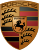

Information
Dr.-Ing. h.c. F. Porsche AG, usually shortened to Porsche AG, is a German automobile manufacturer specializing in high-performance sports cars, SUVs and sedans. The headquarters for Porsche AG is in Stuttgart, and is owned by Volkswagen AG, which itself is majority owned by Porsche Automobil Holding SE. Porsche's current lineup includes the 718 Boxster/Cayman, 911, Panamera, Macan, Cayenne and Taycan.
History
Ferdinand Porsche founded the company called "Dr. Ing. h. c. F. Porsche GmbH" in 1931, with main offices at Kronenstraße 24 in the centre of Stuttgart. Initially, the company offered motor vehicle development work and consulting, but did not build any cars under its own name. One of the first assignments the new company received was from the German government to design a car for the people, that is a "Volkswagen". This resulted in the Volkswagen Beetle, one of the most successful car designs of all time. The Porsche 64 was developed in 1939 using many components from the Beetle.
During World War II, Volkswagen production turned to the military version of the Volkswagen Beetle, the Kübelwagen, 52,000 produced, and Schwimmwagen, 15,584 produced. Porsche produced several designs for heavy tanks during the war, losing out to Henschel & Son in both contracts that ultimately led to the Tiger I and the Tiger II. However, not all this work was wasted, as the chassis Porsche designed for the Tiger I was used as the base for the Elefant tank destroyer. Porsche also developed the Maus super-heavy tank in the closing stages of the war, producing two prototypes. Ferdinand Porsche's biographer, Fabian Müller, wrote that Porsche had thousands of people forcibly brought to work at their factories during the war. The workers wore the letter "P" on their clothing at all times. It stood not for "Porsche," but for "Poland."
At the end of World War II in 1945, the Volkswagen factory at KdF-Stadt fell to the British. Ferdinand lost his position as Chairman of the Board of Management of Volkswagen, and Ivan Hirst, a British Army Major, was put in charge of the factory. (In Wolfsburg, the Volkswagen company magazine dubbed him "The British Major who saved Volkswagen".) On 15 December of that year, Ferdinand was arrested for war crimes, but not tried. During his 20-month imprisonment, Ferdinand Porsche's son, Ferry Porsche, decided to build his own car, because he could not find an existing one that he wanted to buy. He also had to steer the company through some of its most difficult days until his father's release in August 1947. The first models of what was to become the 356 were built in a small sawmill in Gmünd, Austria. The prototype car was shown to German auto dealers, and when pre-orders reached a set threshold, production (with aluminium body) was begun by Porsche Konstruktionen GesmbH founded by Ferry and Louise. Many regard the 356 as the first Porsche simply because it was the first model sold by the fledgling company. After the production of 356 was taken over by the father's Dr. Ing. h.c. F. Porsche GmbH in Stuttgart in 1950, Porsche commissioned a Zuffenhausen-based company, Reutter Karosserie, which had previously collaborated with the firm on Volkswagen Beetle prototypes, to produce the 356's steel body. In 1952, Porsche constructed an assembly plant (Werk 2) across the street from Reutter Karosserie; the main road in front of Werk 1, the oldest Porsche building, is now known as Porschestrasse. The 356 was road certified in 1948.
Company logo
Porsche's company logo was based on the coat of arms of the Free People's State of Württemberg of former Weimar Germany, which had Stuttgart as its capital. (The same arms were used by Württemberg-Hohenzollern from 1945-1952, while Stuttgart during these years was the capital of adjacent Württemberg-Baden.) The arms of Stuttgart was placed in the middle as an inescutcheon, since the cars were made in Stuttgart. The heraldic symbols were combined with the texts "Porsche" and "Stuttgart", which shows that it is not a coat of arms since heraldic achievements never spell out the name of the armiger nor the armigers home town in the shield.
Württemberg-Baden and Württemberg-Hohenzollern became part of the present land of Baden-Württemberg in 1952 after the political consolidation of West Germany in 1949, and the old design of the arms of Württemberg now only lives on in the Porsche logo. On 30 January 1951, not long before the creation of Baden-Württemberg, Ferdinand Porsche died from complications following a stroke.
Models
- 356
- 911
- 911 (clasic)
- 930
- 964
- 993
- 996
- 997
- 991
- 992
- 912
- 914
- 918 Spyder
- Boxster-2
- Carera-GT
- Cayman
- Cayenne
- Panamera
- Taycan